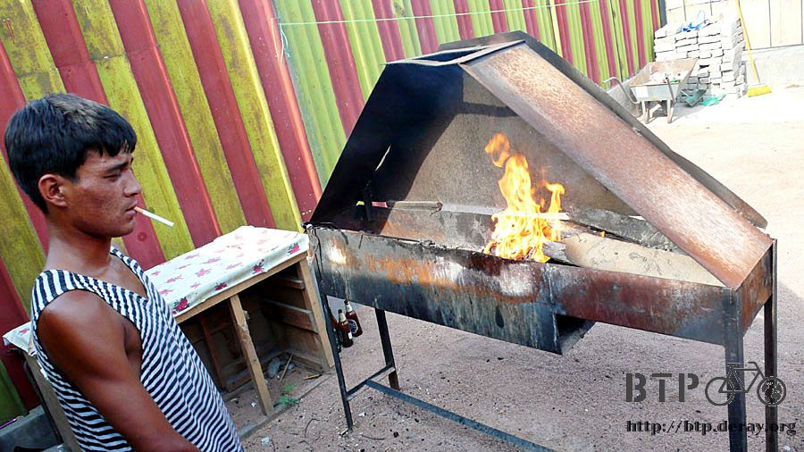

扭曲的善意
昨天睡的有點涼快過了頭，稍微冷了一點，還好沒有感冒，有睡袋真是太保命了。
早上五點多，三個騎著三輪機車來買東西的少年，機車在砂礫地上駛過的聲音將我吵醒。
他們看到我，對雙手環抱在胸前，對我比著『睡在這邊一定很冷吧？』的姿勢。
離開睡袋的瞬間真的超冷，裡面只穿著短褲短袖，趕緊將長褲和外套都穿回來，手腳動一動讓身體暖和起來。
昨天睡前還是將小多身上的包包都卸了下來，睡在外頭還這樣，其實有點傻，如果遇到壞人或是小偷，我這麼做只是方便別人偷東西更容易而已。
那個油漆成藍色的鐵桌椅則是我趴坐了一晚上睡覺的地方。早上用微濕的毛巾將臉隨便擦一擦，克難一點吧～反正快要到大城市了。
早晨跟夕陽除了升起和落下方向不一樣之外，其實還真難分辨有什麼太大的差異。
從睡覺的地方往靠湖的大城市，巴爾哈許，只剩下五十多公里路，一大清早還不到六點就出發，估計十點前就可以抵達。
好想在大城市找一間舒服的旅館休息個幾天，洗舒服的熱水澡，最好窗口就有免費的網路訊號可以用，疲勞已經累積的越來越多了。
距離巴爾哈許還有五十幾公里的時候就可以看到幾座高高得大煙囪在冒著白煙，順著風勢往下飄。
這個靠湖的都市該不會是個工廠吧？心中滿懷著疑問繼續騎著車。
很順利的在十點左右就抵達巴爾哈許，一進入城市就是多的像墳場十字架一樣的鐵塔，無處不在的樹立著，迴響著高壓電的嗡嗡聲。
因為風向的緣故，那些大煙囪的煙通通吹到這裡來，到處都是白茫茫的一片，能見度極低。
而且空氣超差的，這些不只是白色的煙而已，不知道是什麼化學物質，一聞到就嗆的猛咳嗽，急忙戴起口罩。
平交道放下柵欄，可是沒看到火車，因為空氣太髒了，之後火車才從霧白色的地方駛出來，拖著六十五節的貨物車廂，開了好久才走完平交道。
繞過工廠區兜了一個圈子才進到住宅區的巴爾哈許，說是大城市其實也不怎麼樣，跟中國或是歐洲的城市相比都顯得太寒酸。
但就規模來說的確這沿路上經過的城市中數一數二的大城市，公寓建築林立、購物商城、各式各樣的商家，比較有繁榮的氣息。
公寓中那張大海報是哈薩克的總統，很失禮的講，我猜哈薩克應該是沒有民主選舉，所以他才能以這樣的政績繼續執政。
這是一個很奇怪的國家，要看有線電視的話必須自己接小耳朵才有辦法，所以家家戶戶的窗口都是一大堆的小耳朵。
這個城市有很多的計程車跑來跑去，也許共乘文化在這裡吃不開吧。
在城市裡兜了一圈，沒有找到網路的招牌，心裡很失望，既然沒有網路，那就沒有在這邊住一個晚上的吸引力。
因為時間還不到中午，所以打算在這邊吃過午餐之後就接著往首都的方向騎去。
我本來以為這是巴爾哈許的市長官邸，結果是一個很有名的歌星的記念館。
在一間燒烤啤酒店稍作休息，吃飯前想洗把臉，結果有一間超大的廁所，那就順便在裡面好好的洗個澡，把昨天沒洗乾淨的部分補回來。
因為想要在這邊睡個午覺，所以就換了衣服，身上穿的髒衣服也順便在這裡洗一洗，然後趁著大太陽晾起來。
本來只想吃個午餐而已，結果還順便洗了澡跟洗衣服，也算是意料之外的收穫。
午餐是免費的，那個白色的湯是冰的，裡面有切碎的小黃瓜、熱狗等。湯上面飄著很多的綠色香料，味道我不是很喜歡，為了不失禮就勉強的吃。
這間店是幾個好朋友合資開的，有人負責當切肉的廚師、有人負責燒烤、有人負責外場的服務生等等。
當到的時候廚師正在和警察朋友聊天，警察一看到我都會叫我拿出護照來，這次也不例外。~_~
餐廳的人問我說有沒有去湖邊遊過泳？
那個黑黑的，負責燒烤的人，他叫做阿漏思安，女生則是媽媽級的英娜>
男生本來他說下午要帶我去湖邊游泳，結果一拖再拖，拖到兩三點還是沒有要出發的意思。
我就累得趴在桌上睡著，然後被叫去後院的涼椅上躺著睡，順便問我說今天要留在這邊過夜嗎？

嗯，本來是打算吃過午餐就要出發，能夠讓我洗澡和洗衣服已經很感謝了，現在還問我要不要留下來過夜。
有點熱情的令人驚訝，但既然可以好好的休息一天，那就不急著趕路，答應在這裡住一個晚上。
在後院打瞌睡到下午六點，阿漏思安依然沒有要帶我去湖邊的任何意思。
我實在悶得很無聊，不知道要幹什麼好，英娜拖著我說一起去她家看看。
搭著計程車去郊區的小地方，第一次進到哈薩克人的家裡，除了外表的破舊之外，裡面也是令人驚訝的寒酸。
滿地的酒瓶、菸頭、髒兮兮的毯子丟在破了好幾個洞、棉花都跑出來的棉被上，衣著不整的鄰居剛從酒意中醒來。
看到英娜回來，兩個人又繼續喝起了伏特加配紅茶或是果醬，然後不停的抽菸。
讓我很不能適應的生活方式，但是哈薩克人不論男人、女人、老人、小孩，幾乎所有人都在抽菸。
撇開這樣亂糟糟的生活方式，英娜的家裡到是種了很多的水果，櫻桃、蘋果、藍莓、葡萄，全部都是結實纍纍，或是已經落了滿地的果實。
英娜有一個三歲的小女兒，漂亮的像洋娃娃一樣，綠色的眼睛，白裡透紅的肌膚，跑起來像印地安人那樣的叫聲，很惹人喜歡。
今天不知道吃了什麼奇怪的食物，肚子整天都非常不舒服，在英娜家吃了幾個藍莓跟櫻桃之後大發作。
腳步蹣跚的走在後院的果園裡，反胃的嘔吐了起來，一吐就停不下來，從下午茶、午餐、早餐，甚至感覺連昨天的晚餐也吐出來了。
非常的不舒服，想喝水，可是家裡只有烈酒、啤酒、冷掉的紅茶，拜託英娜帶我搭車回去，我必須回去吃藥並且買水喝。
看到我這麼不舒服，翹班出來的英娜只好跟媽媽和小女兒說掰掰，帶我回去店裡。
在等公車的時候買了一瓶礦泉水，整個哈薩克都是缺水的沙漠或是接近沙漠地形，水資源取得不易，巴爾哈許雖然是湖邊城市，但湖水並不能喝。
搭在搖晃的公車上，才停了兩站，我就指著車門跟英娜說我要下車，快不行了。
一走出車門，郎蹌的走了五步，就蹲在路邊又吐了起來，剛剛才喝了半瓶的水，全部都付之一炬。
好不容易回到燒烤餐廳，我到隔壁商店再買一瓶水，配上一顆止瀉藥，然後喝了一大杯的熱開水泡紅糖。
之前在中國吃壞肚子的時候，用熱水泡紅糖這一招救了我一次，這次就如法炮製，無奈已不再靈驗。
十分鐘之後在我從外頭的床起身，要衝去廁所的路上，又通通吐了出來，因為吐的都是水，讓我覺得自己好像會噴水的玩具似的。
阿漏思安點起烤肉爐的火，入夜後店裡生意越來越熱鬧，人聲鼎沸，音樂也是開到極限。
烤肉的味道漸漸的傳出來，阿漏思安拿了一串問我要不要吃？
我用大拇指劃過自己的脖子，表示自己快要死掉了，現在連喝水都會吐。

今天睡覺的床就位在烤肉爐的旁邊，食物的味道一直傳過來，一點也不會覺得肚子餓，反而聞得很噁心，難以入眠。
勉強入眠到凌晨一點，被阿漏思安吵起來時，店裡已經恢復寂靜。
他不同於白天和氣的模樣，看起來有點瘋瘋癲癲的，講的哈薩克話我一句也聽不懂，一開始好像說我睡了他的床，他沒地方可以睡。
是他自己說我今天晚上可以睡在這張床上的，現在又跟我講一堆有的沒的，我就說床還給你，我去地上搭地鋪總行吧。
他又作勢說不用，說他可以睡在餐廳裡面。
身體好不容易才感覺好一點點，店裡安靜下來，烤肉的味道消失之後才得以睡著的我，惡夢才正要開始。
十分鐘之後，阿漏思安又過來把我吵醒，又講的一堆聽不懂的話，好像說餐廳裡面蚊子很多，他被咬的睡不著，想跟我睡在同一個帳篷裡面。
我躺在帳篷裡將帳篷撐開給他看，說這個帳棚很小，是單人帳，不可能擠兩個人在裡面，拜託你不要煩我，我想要睡覺。
他又離開一下，沒幾分鐘之後又回來，指著手錶問我明天幾點要走？
我比著七，七點離開，他搖搖頭說不行，比著五，要我五點就走。
真的是沒完沒了得煩個不停，我只好說OK，我五點就走，同時將手錶的鬧鐘調成凌晨四點叫我起床。
他接著離開，沒幾分鐘又跑過來，胡言亂語的講了一堆話，又提到警察又提到老闆，根本不知道在講什麼。
最後向我借手機，我再度爬出帳篷，拿出手機借給他，反正這隻手機秀斗了，只能接不能打，你要借就借給你吧。
手機拿走我想說這次總能讓我安靜的睡到四點了吧？
惡夢正式引爆。
手機借走之後沒多久他又回來，用右手摀著臉，站在床旁邊，言詞激動、對空揮拳、邊講邊哭，說什麼有人揍他，而且還把我的手機狠狠的摔到牆上去之類的。
我的手機！？
這次是用跳的離開帳篷，我說我的手機咧？
他指著黑壓壓的餐廳裡面，邊講邊哭，要我自己進去看。
有點害怕但還是進去裡面兜了一圈，裡面漆黑一片，除了一個正在清掃的歐巴桑之外根本什麼都沒有。
他一把用力的把我拉回餐廳後院，說有人因為我而揍他之類的，在比較亮的地方仔細看他的臉，根本一點傷也沒有，在跟我裝什麼瘋。
我一直問他我的手機呢？
在沒有網路可以用的哈薩克，手機是連繫我跟台灣唯一的通訊工具，手機被摔爛也沒關係，我至少要把裡面的SIM卡給拿回來。
他繼續比手畫腳，對空氣揮拳，又哭又叫又下跪，還作勢要揮拳揍我，而且還真的揍了我手臂幾拳，因為他說都是我害他被揍。
我實在受不了這個到了夜晚就莫名其妙發瘋的人，我說我現在就離開，這樣總行了吧。
到停小多和放行李的地方，包包都被翻過，有的拉鏈被拉開還沒有拉回原位，零散的東西掉了一地。
看到這個景象讓我腦袋一片混亂，現在到底是什麼情形？
蹲在地上開始將東西收拾回原位，盡可能保持腦袋清楚面對接下來會發生的事情。
當我回頭一看阿漏思安在幹嘛的時候，他從餐廳外面放了一條超大隻的狗進來，把狗拉倒我身邊，開始跟狗講話。
好像是狗可以當我跟他之間的翻譯員一樣，或是狗可以幫他作證，有人因為我在這邊過夜而揍他，又或是他正不停的跟狗說，咬他！咬他！
幸好這隻狗沒有人類來的瘋狂，只是和我一樣半夜被瘋子吵醒，還搞不清楚是怎麼回事。
我的眼光只要一離開阿漏思安，他就用力的拍拍我的肩膀，指著自己，然後對空氣猛揮兩拳，表情很氣憤的樣子。
我點點頭表示了解他的辛酸，繼續整理我零散的行李，期盼能夠從裡面找到手機的殘骸。
好不容易行李整理好了，衣服也沒時間換，穿著睡衣，將背包掛回小多身上，狼狽的走到餐廳的入口鐵門，發現大門給鎖上了。
前面就是出口，我已經準備好要半夜離開這個瘋狂的地方，但是門被鎖住，回頭一看又是一個不能溝通的瘋子牽一條狗。
我指著鐵門，大聲的說『把門打開！』，這是我第一次大聲的吼阿漏思安，因為門不打開我就離不開這裡，我不想在這邊跟他耗一個晚上。
雖然我講的是中文，但是態度強硬，那一瞬間他似乎沒那麼瘋狂，慢步走過來將門鎖給打開，開啟了讓我通往自由的路。
離開餐廳時已經快要清晨兩點，我根本不知道這個時候有什麼地方可以讓我待一晚上，此時此刻我還在因為身體不舒服而痛苦著。
想找徹夜營業的餐廳，但是找不到；想找到陰暗的角落坐在牆邊窩一晚上，一彎進小巷裡面就看到三三兩兩的哈薩克人蹲在路邊抽菸。
跟自己說要冷靜下來，大不了騎到荒野去，在野外搭帳篷，也許有蛇或是蜥蜴，但起碼沒有壞人。
最後看到一間休息中的加油站，在深處的花圃中有個地方讓我藏身，停下小多，拿出帳篷，鋪在佈滿小石子的地上。
躲在帳篷的時候，拉起蚊帳，就聽到耳邊有蚊子嗡嗡的聲音，因為蚊子太多了，已經有幾隻飛了進來。
只好重新拉開蚊帳，揮趕著蚊子，然後快速拉起蚊帳，接著又聽到更多的嗡嗡聲，這次的拉開跟拉起之間，又飛進了更多的蚊子。
又試了一次拉開蚊帳、趕蚊子、快速拉起蚊帳，透過夜光看到蚊帳外面有幾十隻的蚊子等著要飛進來咬我，而帳篷裡面依然有蚊子嗡嗡的聲響。
躲在帳篷裡面，揮舞著耳朵邊的蚊子，要吸血就隨便你們吸吧，可是不要嗡嗡的吵我，吸飽血就安靜一點讓我睡覺。
夜裡睡得很不安穩，身體更是痠痛不堪，加上肚子痛、又嘔吐了一天，今夜太委屈。
夜裡下起了毛毛細雨，雨滴落在臉上，已經疲憊到沒有力氣重新去找一個可以躲雨的地方過夜。
也許老天爺同情我，雨一下子就停了。
今天是個很好的教訓，跟我說在哈薩克雖然好人很多，天天都在受人的幫助，但是警備心也不要降低得太天真，壞人不是沒有的。
更重要的是，不要因為阿漏思安一個人，就破壞了對其他哈薩克人的好印象。
繼續閱讀：7.5 大睡一場
哈薩克-堅戈－ 1：0.26 台幣
7.4 |
總計：595元 |
炸肉餅120元、巧克力375元、可樂100元 |
|